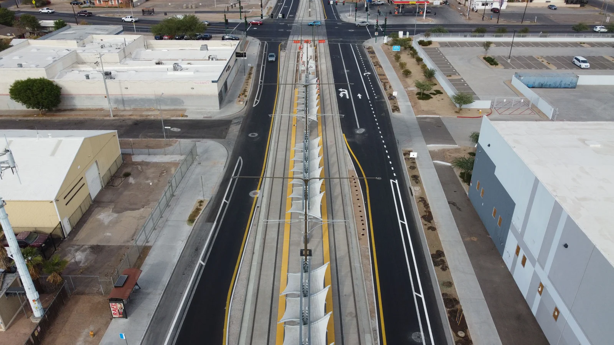
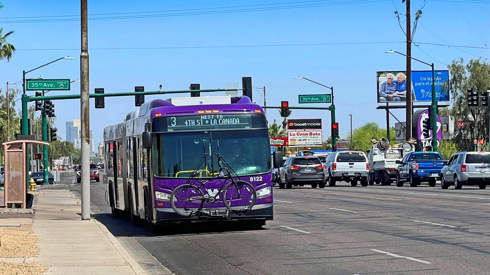

D1 · Story Frame
How does public transportation help connect residents across the large and growing city of Phoenix?
Methods and sources
This story uses publicly available information from the City of Phoenix and public transportation sources linked through the city. Data will be compared and presented through figures, a table, and an accessible SVG. Values will be kept consistent with their original sources unless a transformation is clearly documented.
D2 · Editorial Figures


D3 · Accessible Data Table
| Category | Value A | Value B | Value C |
|---|---|---|---|
| Replace | — | — | — |
| Replace | — | — | — |
Add the data source and any transformation note.
D4 · Responsive SVG
D5-D6 · System and Documentation
Extend Module 1 patterns, then link your sources, asset credits/licenses, test record, transformation notes, and AI disclosure.